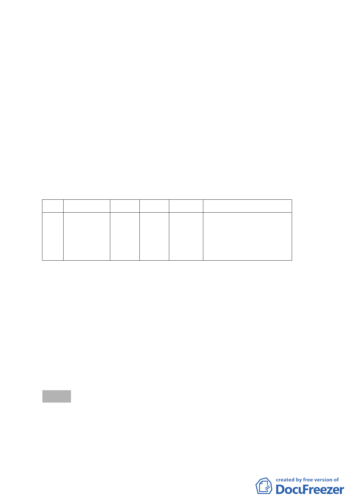

發現該案有建築物高度道路陰影及面前道路認定檢討不符法
令規定之問題，故請更新會依法令再檢討規劃。
案經市府更新處檢討確定有協助更新與迅行辦理都市計
畫變更之急迫性與必要性，為協助該海砂屋重建，爰辦理都
市計畫變更。
三、 原都市計畫及土地使用現況
本計畫區現行使用分區為公園用地，現況已開闢為東湖4
號公園供民眾使用，土地權屬為市有，管理單位為市府工務
局公園處。
四、 變更計畫內容：
變更本市內湖區東湖段一小段19地號部分公園用地為道路用
地。
編號 位置 原計畫 新計畫 面積（㎡）
變更理由
1 內湖區東湖段 公園 道路
82 基地北側臨接之計畫道
一小段19地號 用地 用地
路寬度不一，為利車行及
部分土地
改善內湖區交通系統，將
公園北側退縮2公尺，變
更為道路用地。
五、 事業及財務計畫：本案係為配合聯邦合家歡社區吉祥區之都
市更新案，經協調該更新會同意本案規劃設計及開闢費用由
其實施者負擔。
六、 全案係市府100年5月31日府都規字第10033221300號公告公
開展覽並函送到會。
七、 公民或團體所提意見：計8件。
八、 辦理單位：臺北市政府。
九、 法令依據：都市計畫法第27條第1項第4款。
決議：
一、 本案因與會委員多數表達不贊同因更新案建築設計不符法規
規定而變更都市計畫，故本案不予通過。
二、 對於民眾提出公園管理相關意見另請民政局研處。
三、 有關本地區交通系統檢討部分，請市府納入內湖區都市計畫
- 10 -